CONECTAR.
PROTEGER.
Acceso remoto seguro a MySQL
Acceso por origen autorizado, mínimo privilegio, cortafuegos y cifrado TLS.
Entorno real
Servidor Ubuntu: 192.168.56.103, interfaz enp0s8. Cliente Windows: 192.168.56.1, Ethernet 2. MySQL Server 8.0.46 y MySQL Shell 26.10.0. Se conserva NAT en enp0s3 para Internet y SSH.
Las direcciones son las observadas durante la práctica. Se asignan por la red virtual y pueden cambiar al reiniciar: deben comprobarse antes de reutilizar la configuración.
Estado inicial
MySQL activo. Inicialmente Ubuntu solo tenía enp0s3 con NAT y dirección 10.0.2.15.
systemctl is-active mysql
ip -br address
ip route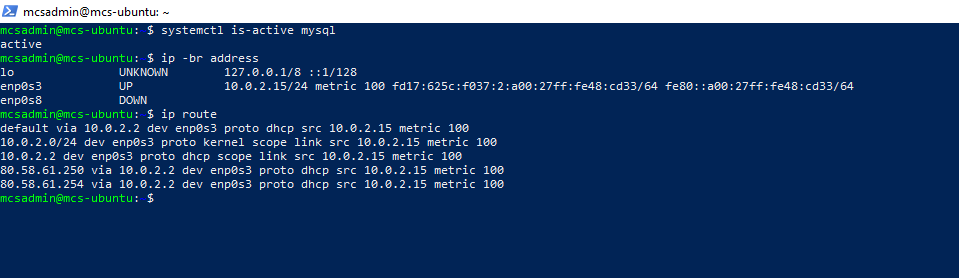
Red del servidor y cliente
Se añadió un segundo adaptador solo-anfitrión manteniendo NAT. Ubuntu usa enp0s8 con 192.168.56.103/24; Windows usa Ethernet 2 con 192.168.56.1/24. El adaptador nuevo se habilitó mediante un archivo Netplan independiente.
sudo nano /etc/netplan/60-asgbd-hostonly.yaml
# Contenido del archivo:
network:
version: 2
ethernets:
enp0s8:
dhcp4: true
dhcp4-overrides:
use-routes: false
use-dns: false
# En Ubuntu:
sudo chmod 600 /etc/netplan/60-asgbd-hostonly.yaml
sudo netplan generate
sudo netplan apply
ip -4 -br address
# En PowerShell de Windows:
Get-NetIPAddress -AddressFamily IPv4 | Where-Object {$_.IPAddress -like "192.168.56.*"} | Format-Table InterfaceAlias,IPAddress,PrefixLength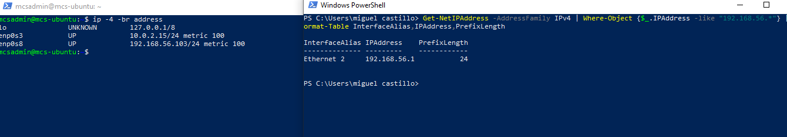
Escucha de MySQL
Se guardó una copia, se cambió bind-address a la IP de la red solo-anfitrión y se añadió skip-name-resolve. mysqlx-bind-address y los parámetros anteriores se conservaron.
sudo cp -n /etc/mysql/mysql.conf.d/mysqld.cnf /etc/mysql/mysql.conf.d/mysqld.cnf.tutorial2.bak
sudo nano /etc/mysql/mysql.conf.d/mysqld.cnf
# Dentro de [mysqld]:
bind-address = 192.168.56.103
skip-name-resolve
mysqlx-bind-address = 127.0.0.1
# Validar antes de reiniciar:
sudo mysqld --validate-config
echo $?
sudo systemctl restart mysql
systemctl is-active mysql
sudo ss -lntp | grep ":3306"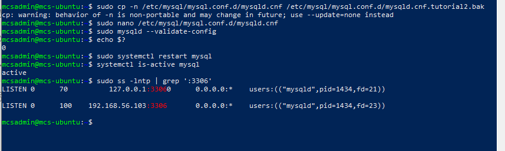
Cuenta limitada al origen
Se creó remoto1 exclusivamente para 192.168.56.1 con SELECT sobre academia_segura. Las claves se omiten del informe; sustituir la referencia al reutilizar los comandos.
sudo mysql
CREATE USER 'remoto1'@'192.168.56.1' IDENTIFIED BY 'TU_CLAVE_DE_PRACTICAS';
GRANT SELECT ON academia_segura.* TO 'remoto1'@'192.168.56.1';
SHOW GRANTS FOR 'remoto1'@'192.168.56.1';
SELECT User, Host, account_locked FROM mysql.user WHERE User = 'remoto1';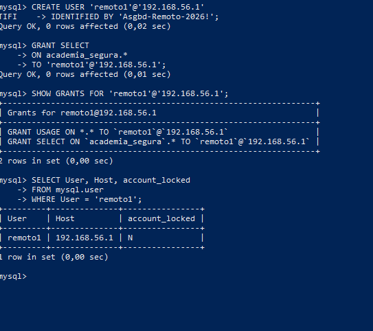
Cortafuegos UFW
UFW estaba inactivo. Se permitió primero SSH, después MySQL solo desde Windows y se activó el cortafuegos. La captura confirma 3306/tcp limitado a 192.168.56.1; se conservaron Apache y OpenSSH.
EXIT;
# En Ubuntu:
sudo ufw status verbose
sudo ufw allow OpenSSH
sudo ufw allow from 192.168.56.1 to any port 3306 proto tcp
sudo ufw enable
sudo ufw status numbered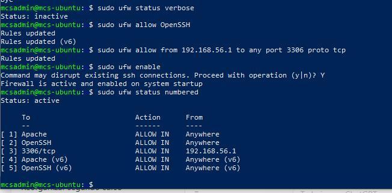
Conectividad TCP
Desde Windows se probó el acceso al puerto. Esta prueba no acredita credenciales ni privilegios.
Test-NetConnection 192.168.56.103 -Port 3306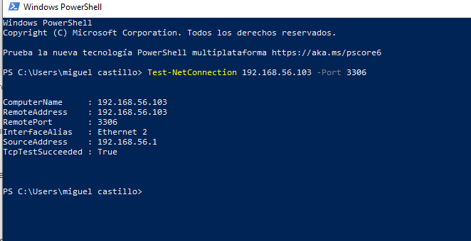
Conexión remota y consultas
Se instaló MySQL Shell en Windows. La conexión como remoto1 funcionó. Apareció un aviso de PROCESS durante el autocompletado; no se concedió ese privilegio adicional. Se comprobaron identidad, base y consultas.
mysqlsh --sqlc -h 192.168.56.103 -P 3306 -u remoto1 -p -D academia_segura
# Dentro de MySQL Shell:
SELECT USER(), CURRENT_USER(), DATABASE();
SELECT * FROM alumno;
SELECT * FROM curso;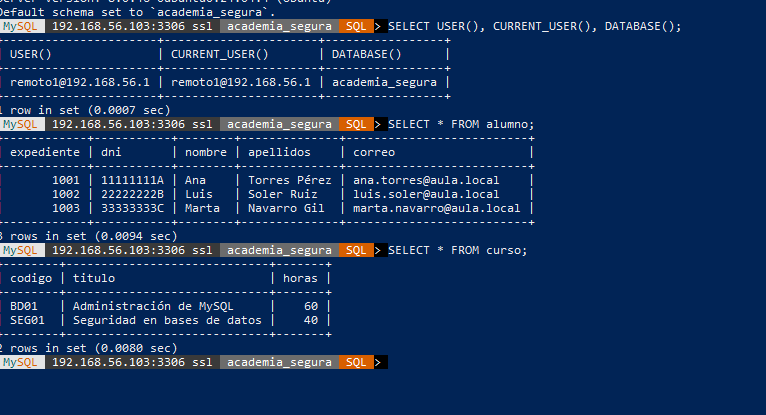
Operaciones denegadas
Se probaron INSERT y DROP con remoto1. Debían rechazarse porque la cuenta solo dispone de SELECT.
INSERT INTO curso (codigo, titulo, horas) VALUES ('REM01', 'Curso remoto', 10);
DROP TABLE curso;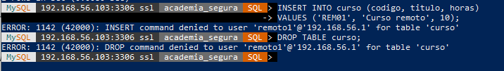
Comprobar cifrado TLS
Se revisaron las variables TLS del servidor. La sesión cifrada aportada muestra TLS_AES_128_GCM_SHA256. Las rutas ssl_key y ssl_cert identifican archivos; no se muestra el contenido de ninguna clave privada.
-- Como administrador en Ubuntu:
SHOW VARIABLES LIKE 'have_ssl';
SHOW VARIABLES LIKE 'ssl_ca';
SHOW VARIABLES LIKE 'ssl_cert';
SHOW VARIABLES LIKE 'ssl_key';
# Desde PowerShell, tras salir con \quit:
mysqlsh --sqlc --ssl-mode=REQUIRED -h 192.168.56.103 -P 3306 -u remoto1 -p -D academia_segura
-- En la sesión remota:
SHOW STATUS LIKE 'Ssl_cipher';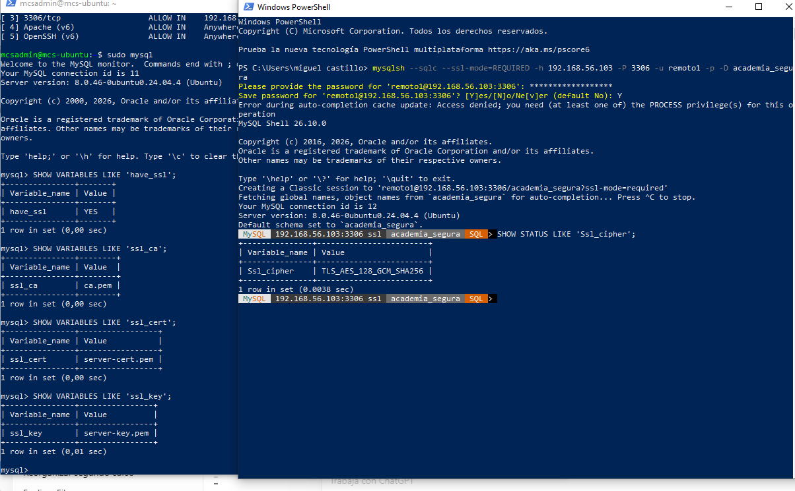
Exigir TLS a remoto1
Tras REQUIRE SSL, la conexión con ssl-mode=DISABLED devolvió Error 1045 Access denied. Se repitió el acceso exigiendo cifrado.
-- En Ubuntu como administrador:
ALTER USER 'remoto1'@'192.168.56.1' REQUIRE SSL;
SHOW CREATE USER 'remoto1'@'192.168.56.1';
# En Windows, tras cerrar la sesión:
mysqlsh --sqlc --ssl-mode=DISABLED -h 192.168.56.103 -P 3306 -u remoto1 -p -D academia_segura
mysqlsh --sqlc --ssl-mode=REQUIRED -h 192.168.56.103 -P 3306 -u remoto1 -p -D academia_segura
-- Dentro de la conexión cifrada:
SHOW STATUS LIKE 'Ssl_cipher';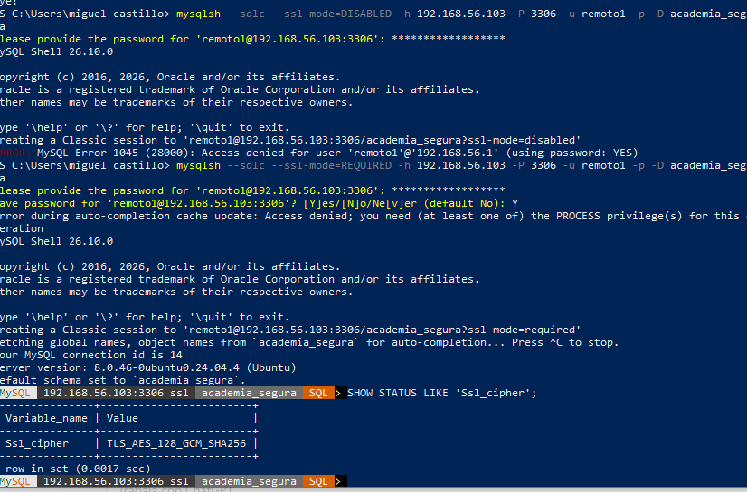
Actividad final: auditor_red
Cuenta limitada a la IP del cliente, con TLS obligatorio y SELECT solo sobre la vista. La captura aportada muestra ssl_type ANY y account_locked N.
CREATE USER 'auditor_red'@'192.168.56.1' IDENTIFIED BY 'TU_CLAVE_DE_AUDITORIA' REQUIRE SSL;
GRANT SELECT ON academia_segura.vista_alumnado_cursos TO 'auditor_red'@'192.168.56.1';
SHOW GRANTS FOR 'auditor_red'@'192.168.56.1';
SELECT User, Host, ssl_type, account_locked FROM mysql.user WHERE User = 'auditor_red';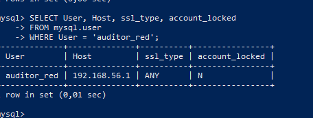
Actividad final: consulta permitida
Desde Windows se conectó como auditor_red y se consultó la vista. La evidencia final muestra las tres filas y la identidad correcta.
mysqlsh --sqlc --ssl-mode=REQUIRED -h 192.168.56.103 -P 3306 -u auditor_red -p -D academia_segura
SELECT USER(), CURRENT_USER(), DATABASE();
SELECT * FROM vista_alumnado_cursos;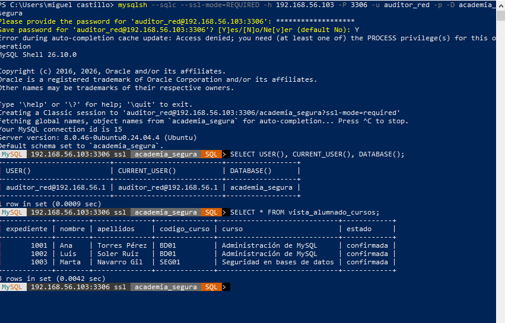
Actividad final: acceso directo rechazado
La captura aportada muestra SELECT command denied para alumno y matricula. La vista ofrece la información necesaria sin abrir acceso a las tablas originales.
SELECT * FROM alumno;
SELECT * FROM matricula;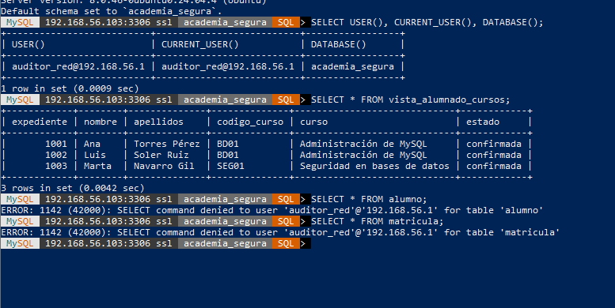
Actividad final: revisión de capas
La evidencia final reúne la cuenta de auditoría, el cifrado TLS_AES_128_GCM_SHA256, SELECT únicamente en la vista y la regla UFW limitada al cliente.
SELECT CURRENT_USER();
SHOW STATUS LIKE 'Ssl_cipher';
SHOW GRANTS;
# Desde SSH, fuera del cliente MySQL:
sudo ufw status numbered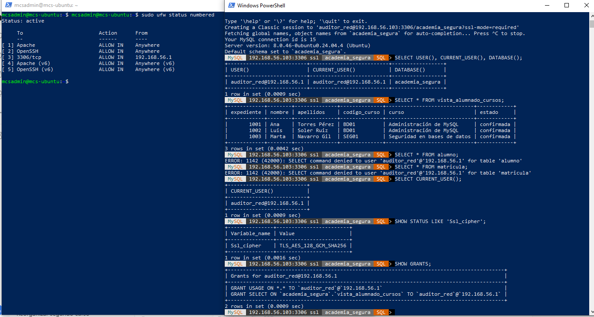
EXAM MODE
| Capa | Qué demuestra |
|---|---|
| Red | Cliente y servidor deben tener comunicación IP. localhost identifica al propio equipo, no a la otra máquina. |
| Escucha | bind-address selecciona la interfaz en que MySQL acepta TCP. No concede permisos de usuario. |
| UFW | Permite 3306 solo desde el origen autorizado. Permitir OpenSSH antes de activarlo conserva el acceso remoto. |
| Cuenta usuario@host | El host identifica el origen autorizado. USER() muestra la identidad de la conexión; CURRENT_USER() la cuenta usada para autenticar y aplicar permisos. |
| Privilegios | remoto1 consulta la base. auditor_red solo consulta la vista. No usar ALL PRIVILEGES para resolver errores de permisos. |
| TLS | REQUIRE SSL obliga a cifrar. Ssl_cipher no vacío confirma cifrado de la sesión. ssl-mode=REQUIRED exige cifrado, pero no equivale por sí solo a validar la identidad del servidor con VERIFY_IDENTITY. |
| Prueba negativa | Error 1045 puede tener varias causas. En esta prueba el rechazo sin TLS se interpreta junto al éxito con la misma cuenta y clave usando TLS. |
| Vista | Permite ofrecer campos seleccionados sin dar SELECT directo sobre alumno y matricula. |
| Autocompletado | El aviso de PROCESS de MySQL Shell no justifica ampliar privilegios de una cuenta de consulta. |
Resultado y tiempo
Actividad realizada de 18:00 a 18:46: 46 minutos, según el horario indicado por el alumno. Se han completado las catorce evidencias. La captura final muestra al auditor consultando la vista, el rechazo de lectura directa, la sesión cifrada y UFW limitado al origen autorizado.
La exigencia de TLS se acredita mediante ssl_type = ANY en la cuenta y las comprobaciones de conexión. SHOW GRANTS de la sesión puede no incluir esa condición en su salida.
Se conservan cuentas, reglas y configuración. La restauración opcional del entorno no se ha ejecutado. El informe solicitado se centra en la configuración y pruebas de auditor_red.